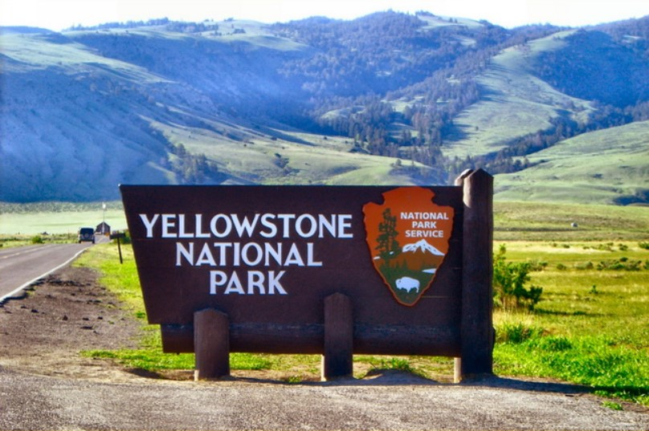
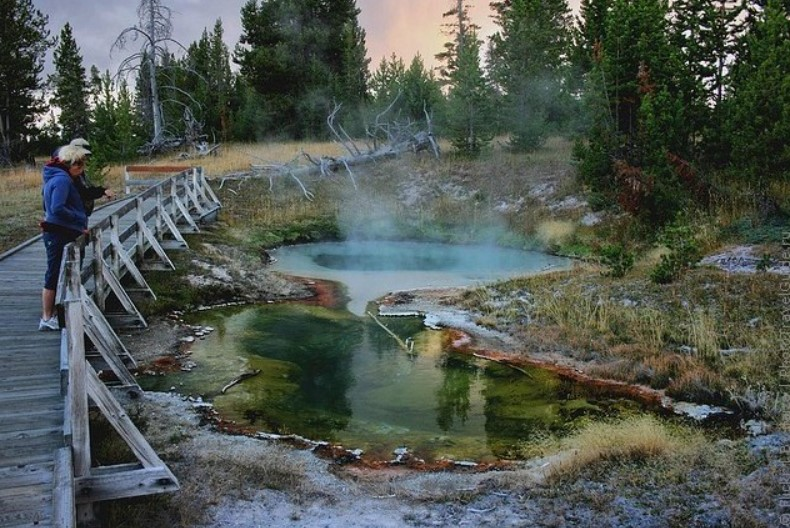
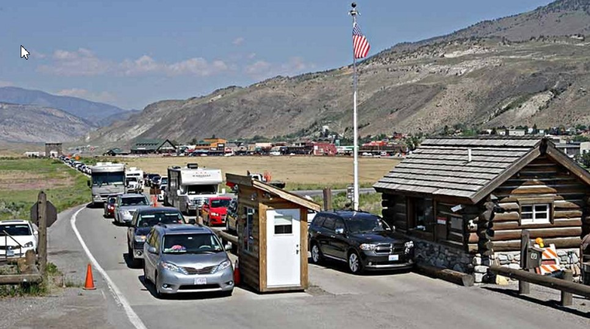
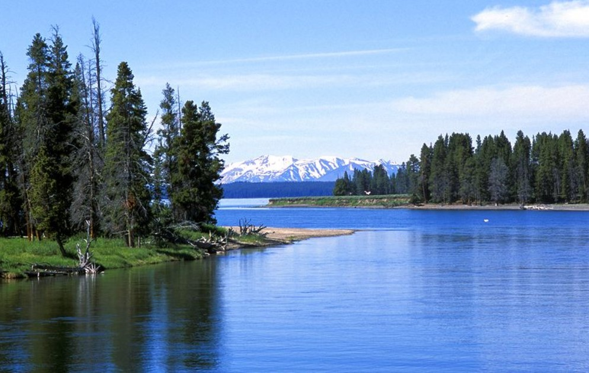

Єллоустонський національний парк
Національний парк Єллоустон - найперший парк на Землі! Офіційно він був відкритий особливим указом президента Улісса Гранта у 1872 році. Але дивовижне місце було відоме білим людям задовго до того. Жителі індіанських племен часто розповідали європейцям про таємниче плато, де живуть злі духи, що плюються пором і окропом, що стрясають землю грізним диханням. Аборигени називали це місце «Країною льоду, вогню і диму, що крутиться». У другій половині XIX століття сюди все частіше почали приходити вчені, які поступово відкривають для себе приголомшливу геологію Йеллоустона.
- Історія
- Географія
- Флора
- Фауна
- Посилання
Історія

Йеллоустон ( англ. Yellowstone National Park ) - міжнародний біосферний заповідник , об'єкт Всесвітньої Спадщини ЮНЕСКО , перший у світі національний парк (заснований 1 березня 1872 ). Знаходиться в США , на території штатів Вайомінг , Монтана та Айдахо . Парк відомий численними гейзерамита іншими геотермічними об'єктами, багатою живою природою, мальовничими ландшафтами. Площа парку – 898,3 тис. га (8983 км²).
Згідно з археологічними даними, люди почали жити на території, яку займає парк, 11 000 років тому. Сучасні дослідники вперше з'явилися в регіоні в 1805 (учасники експедиції Льюїса і Кларка ), але до 1860-х років тут не проводилося жодної господарської чи наукової діяльності. У перші роки після виникнення парку він перебував під керівництвом армії США , а 1917 року управління було передано створеної за два роки до цього Службі національних парків.
Географія
Приблизно 96% території парку перебуває у штаті Вайомінг , 3% у штаті Монтана , і ще 1% у штаті Айдахо . Парк має приблизно прямокутну форму. З півночі на південь протяжність Єллоустонського парку становить 102 кілометри, зі сходу на захід 87 кілометрів. Протяжність асфальтової дороги
(«Великої Петлі»), що проходить через основні визначні пам'ятки парку, 230 кілометрів; сюди не входять ні під'їзди до виходів із парку, ні бічні відгалуження, ні перемичка між Норріс та Кеніон. Річки та озера займають 5 відсотків території парку, при цьому найбільше озеро, Озеро Єллоустон (352,2 км², глибина 122 м, берегова лінія 177 км, висота над рівнем моря 2357 м), є найбільшим високогірним озером вПівнічній Америці . Ліси займають 80 відсотків території, на більшій частині решти площі знаходяться степи.

Дві третини території парку, включаючи озеро Єллоустон і майже всі туристичні визначні пам'ятки, належить до басейну Атлантичного океану (річка Єллоустон, що випливає з однойменного озера — найбільша притока річки Міссурі , яка, у свою чергу, є найбільшою притокою Міссісіпі ). Решта третини належить до басейну Тихого океану . Річка Снейк , що протікає через територію парку - найбільша притока річки Колумбія

Флора
У парку виростають 1870 видів рослин, з яких 1700 - місцеві види, а ще 170 є імовірно заносними. Є вісім видів хвойних дерев, причому скручена широкохвойна сосна займає 80 відсотків усіх лісових площ. Інші види, у тому числі псевдотсуга Мензіса (або псевдотсуга Дагласа, або ялиця Дагласа - Pseudotsuga menziesii) і сосна білокора зустрічаються невеликими групами по всій території парку, при цьому близько семи відсотків популяції цього виду сосни уражено грибом-паразитом Cronartium ribi звану пухирчасту іржу . Ще одне хвойне дерево, що росте в парку,сосна гірська веймутова ( Pinus monticola ). Найчастіші листяні дерева - осики , верби , берези (зустрічаються здебільшого в підліску). Цікаво, що площа осинових лісів у парку зменшувалася протягом усього XX століття , але нещодавно знову почала збільшуватися.
Більшість квіткових рослин цвіте у період між травнем і вереснем. Одне з них, абронія пісколюбна , або йєллоустонська піщана вербена ( Abronia ammophila ) з сімейства ніктагінові ( Nyctaginaceae ), виявлено в дикому вигляді тільки в межах парку; інші види абронії зазвичай ростуть у набагато теплішому кліматі, і поява в парку цієї рослини, мабуть, пов'язана з мікрокліматом, створюваним геотермічними джерелами. Ця рідкісна рослина існує приблизно в 8000 примірниках, всі вони ростуть у піщаних ґрунтах на берегах озера Йеллоустон.
У гарячих водах озера спостерігається утворення бактеріальних колоній химерної форми, що складаються з бактерій трильйонів. Бактерія Thermus aquaticus, що живе в озері, широко використовується в дослідженнях геному.

Заносні рослини поширилися на території парку відносно нещодавно. Більша частина зустрічається у місцях найбільшої концентрації туристів, особливо вздовж доріг, але є й приклади їх поширення вглиб парку, що загрожує місцевим видам. Серед заносних рослин, що найбільш активно розповсюджуються, можна відзначити тимофіївку ( Phleum pratense ) і Нерівноквітник покрівельний ( Bromus tectorum ) [11] . З деякими заносними рослинами доводиться боротися прополюванням і розпорошенням отруйних речовин.
Фауна
У парку водяться майже 60 видів ссавців , у тому числі рідкісні: вовк , рись та гризлі . Серед великих ссавців зустрічаються також бізон , чорний ведмідь ( барибал ), олень вапіті , лось , чорнохвостий олень , сніжна коза , вилорог , товсторог і пума .
Поголів'я бізона в парку відносно велике, близько чотирьох тисяч, і одне з найбільших у США. Це викликає занепокоєння фермерів, які побоюються, що бізони передадуть інфекції домашнім коровам . Як мінімум половина бізонів парку заражена бруцельозом , але випадків зараження худоби поки не зафіксовано. Службовці парку періодично змушені заганяти бізонів, що вийшли з території парку, назад.
У 1926 році в рамках заходів щодо захисту поголів'я вапіті в парку Йєллоустон була повністю знищена популяція вовків, після чого койот став найбільшим хижаком, який полює на гризунів . Але койоти не полюють на великих копитних, і в результаті випадки хвороб серед останніх суттєво почастішали. Практика знищення вовків була припинена у парку лише у 1935 році . Потім довелося вживати заходів щодо їхнього захисту. У 1973 році Конгрес США прийняв Акт про види під загрозою знищення, що згадує, зокрема, вовків. У 1990-ті роки в парку випустили 66 макензійських рівнинних вовків ; 2005 року у парку їх чисельність становила 118 голів.
У парку та околицях живуть, за оцінками, 600 ведмедів гризлі, причому близько половини з них у парку. Поголів'я вапіті становить приблизно 30 тисяч. До рідкісних видів з великих ссавців належать пума (25 особин) та росомаха (кількість невідома). У 2003 були помічені сліди рисі , але саму рись побачити з 1998 не вдавалося.
У парку водяться 18 видів риб , у тому числі йєллоустонський лосось (Oncorhynchus clarki bouvieri), 6 видів рептилій ( черепахи та змії ), 4 види амфібій і 311 видів птахів (у тому числі виключно рідкісний американський журавель , а також білоголовий ор . пелікан та лебідь-трубач ). Майже всі види птахів гніздяться у парку.
Пожежі зустрічаються в природних екосистемах, і рослини так чи інакше до них пристосувалися. Так, у ялиці Дугласа товста кора, яка здебільшого захищає серцевину від пожежі. Шишки сосни скрученої широкохвойної відкриваються при підвищенні температури, так як плавиться смола, що скріплює лусочки, і насіння сосни при пожежі розлітається. Дерева, які захищені гірше, ростуть у вологих місцях, де менша ймовірність пожежі, або розмножуються вегетативно від неушкоджених пожежею коренів. За оцінками, в екосистемах, подібних до Єллоустонського парку, низові пожежі (при яких згоряє трава) відбуваються раз на 30—35 років, а лісові пожежі — раз на 300 років.
Оскільки парк знаходиться в горах, на його території є помітні кліматичні відмінності. Рекордно висока температура (37 ° C) спостерігалася в 1936 , рекордно низька (-54 ° C) в 1933 році. Влітку (з червня до початку вересня) максимальна денна температура 20-25 ° C, вночі високо в горах може опускатися нижче нуля. Влітку часто трапляються грози. Навесні та влітку денна температура зазвичай коливається між 0 і 20 °C градусами, нічна - між -5 і -20 °C. Середні зимові температури нижче -5 °C.
Посилання